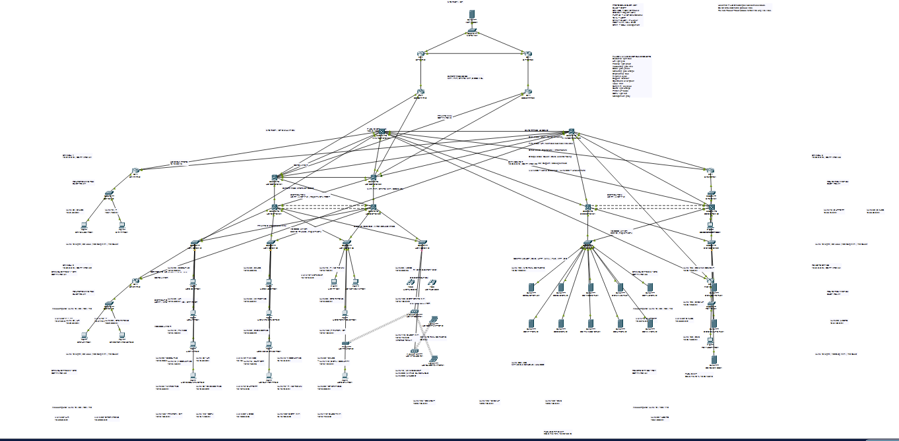
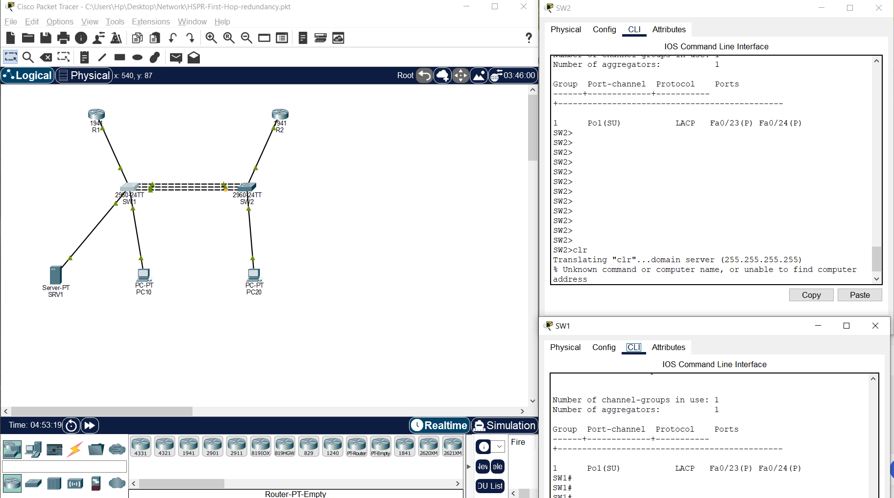
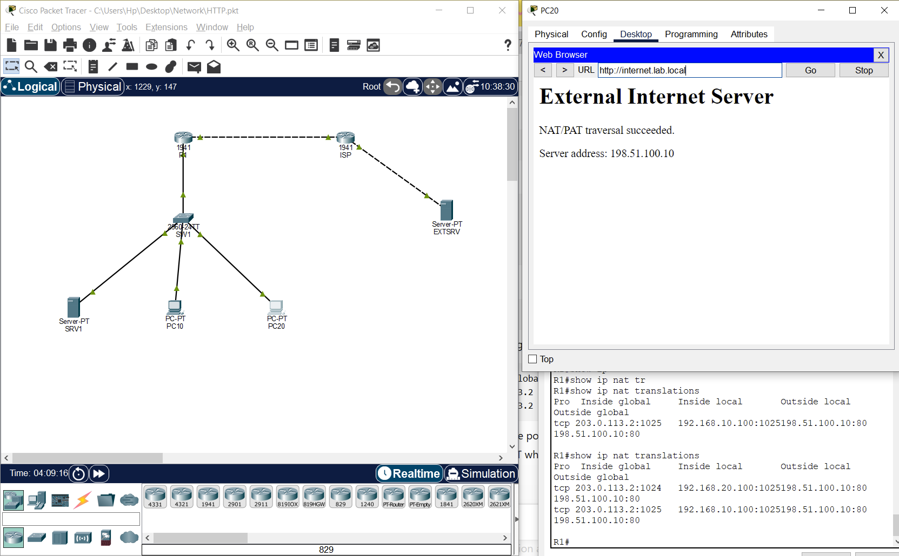

01
Routing, switching & WAN
Hands-on operations across production and multi-site networks, from Layer 2/3 fault isolation through dynamic routing, redundancy, and secure connectivity.
Cisco IOS / IOS-XEMikroTikBGPOSPFVLAN / STPHSRP / VRRP
I support and troubleshoot Cisco and MikroTik networks, Windows Server, and VMware infrastructure. Since 2019, I’ve worked across production, MSP, NOC, and multi-site environments using FortiGate, Microsoft 365, Veeam, and monitoring platforms.
CAREER SIGNAL
PROFILE
I am a Network Engineer with a systems administration background. I work across routing and switching, VPNs, firewall policy, virtualization, backup and recovery, monitoring, identity services, and end-user infrastructure.
I troubleshoot from evidence: isolate the symptom, trace the affected layer, validate routing and packet behavior, then change the configuration. I am currently targeting Network Engineering and Network Support roles in Armenia.
Explore the technical stackCORE SKILLS
Technology grouped by the outcomes it supports: connectivity, security, continuity, and faster diagnosis.
Hands-on operations across production and multi-site networks, from Layer 2/3 fault isolation through dynamic routing, redundancy, and secure connectivity.
Practical firewall, segmentation, NAT, policy, and VPN administration focused on continuity, controlled access, and clear troubleshooting paths.
Windows and virtual infrastructure administration with disciplined backup, restore readiness, lifecycle support, and end-user operations.
Telemetry-driven incident response and repeatable administration using monitoring, log correlation, scripting, and documented runbooks.
PROFESSIONAL EXPERIENCE
A progression from hands-on support and structured cabling to multi-site infrastructure ownership and escalation leadership.
Noubaft Textile Co
Electro Mizan Andisheh
Andishmandan Ararat
Almas Eapadana MSP Co
Ebtekar Soole Sepahan
HANDS-ON LABS
Two Cisco Packet Tracer projects with topology documentation and lab evidence. The results shown here come from simulations.
A campus network lab covering VLAN architecture, 802.1Q, STP, EtherChannel, HSRP, IPv4/IPv6, DHCP, DNS, NAT/PAT, OSPF, EIGRP, BGP, MPLS L3VPN, VoIP, QoS, Wi-Fi, firewall/DMZ, and WAN failover.
Design evidence: the repository maps a dual-edge, dual-core campus, branch links, and a disaster recovery site. Its routing plan identifies intended eBGP, OSPF, and EIGRP paths. End-to-end failover remains unverified in the published evidence.
Model a campus and multi-site WAN with redundant paths and separate user, voice, server, wireless, and DMZ traffic. The documented design connects dual ISP edges to paired campus cores and sketches provider connectivity to two branches and a disaster recovery site.
INTERNET ISP1 ISP2 | | EDGE1------EDGE2 | | CORE1======CORE2
The design uses EtherChannel between campus tiers, with separate data and voice VLANs at the access edge. It plans eBGP at the ISP edge, OSPF in the campus and on one branch path, and EIGRP on the other branch path. The satellite backup is a Packet Tracer WAN emulation. The repository provides a .pkt simulation and design notes.
Start at the access port with VLAN and trunk checks, then inspect EtherChannel state and the gateway. Check protocol neighbors and routes before tracing campus-to-branch traffic. Run link and gateway failures separately, recording reachability and route changes before, during, and after each event.
The published artifacts establish the topology and intended routing boundaries. Standalone CLI configurations, routing output, connectivity results, and failover captures were unavailable for this simulation. A redundant drawing establishes the design. Recovery requires its own recorded test.
A staged Cisco Packet Tracer capstone focused on repeatable deployment, validation, resiliency, and automation practice with the Packet Tracer JavaScript scripting API.
Supporting lab evidence: a companion LACP exercise captures an active Layer 2 port-channel with two bundled interfaces on each switch. HSRP failover and automation results remain unverified in the published evidence.
Build a repeatable multi-site Packet Tracer network for headquarters, a data center, three branches, and a remote office. The design pairs core and edge devices, uses OSPF area 0 as the backbone and areas 20 and 31–34 for sites, and separates corporate, guest, management, and DMZ traffic.

The repository supplies staged Packet Tracer File Script Module JavaScript. The stages split topology creation and configuration into smaller runs to reduce load on the simulator. The source defines HSRP gateways, LACP trunks, multi-area OSPF, DHCP relay, and ACL and NAT controls.
switchport mode trunk
switchport trunk native vlan 998
switchport trunk allowed vlan 10,20,30,40,45,50,55,60,70,75,80,90,100,110,130,140,998,999This excerpt is from the capstone automation source. The trunk explicitly selects permitted VLANs and uses VLAN 998 as its native VLAN. ACL and guest isolation behavior still require allowed- and denied-path tests.


Check VLAN membership, trunk allowances, and bundle state before inspecting HSRP roles, OSPF neighbors, and routes. Then verify application access and negative ACL cases. For failover, remove one member link, gateway, or WAN path per run and record the before-and-after CLI and client connectivity.
The companion captures demonstrate LACP bundle state and an HTTP/PAT path in simulation. Capstone OSPF output, HSRP or WAN failover results, and automation execution results were unavailable. Verify each layer separately so an application success can be traced to the intended configuration.
Browse 14 simulations covering routing, switching, network services, and access-layer security. Each link opens the project folder on GitHub.
Browse the Packet Tracer collection · Open the Networking Labs repository
OPERATIONAL CONTRIBUTIONS
Plan network refreshes, new-site deployments, switch and AP replacements, backups, validation, and rollback with the people affected by the work.
Improve operational resilience through Veeam, SAN/NAS support, restore validation, endpoint protection, and controlled system maintenance.
Work across infrastructure and application teams to isolate issues involving SQL/MySQL, Citrix, web applications, DNS, authentication, and connectivity.
EDUCATION & TRAINING
Formal education supported by practical, role-aligned training and continuous lab work.
EDUCATION
Azad University
Azad University (IAU)
PROFESSIONAL TRAINING
These are course completions and training credentials. CCNA and CCNP Enterprise are currently preparation goals, not claimed certifications.
LANGUAGE & PRACTICE
Professional working proficiency.
A1 · Learning
Based in Yerevan, Armenia. Open to on-site, hybrid, and remote roles in network engineering, systems engineering, and network support.
Open to relocation. A visa or work permit is required.